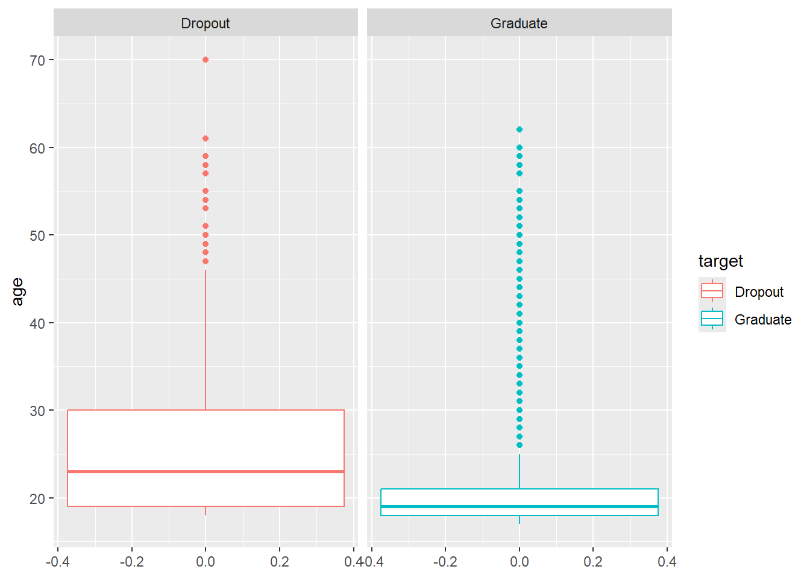
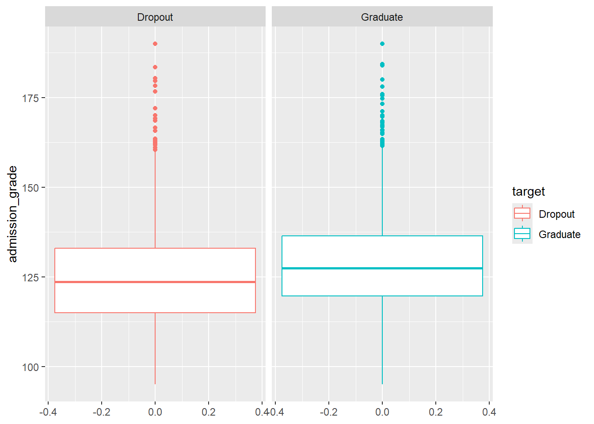
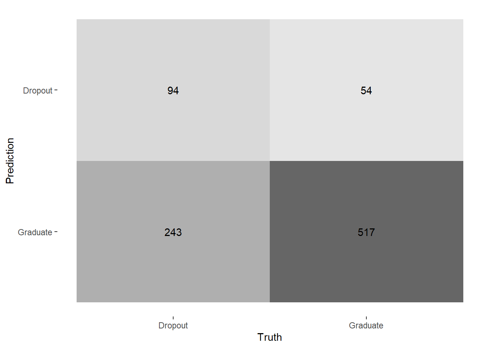

library(rio)
library(tidyverse)
data<-import("data/dropout2.csv")7 Regresión logística
7.1 Antecedentes
La regresión logística es un modelo estadístico utilizado para predecir la probabilidad de que ocurra un evento binario (por ejemplo, éxito/fracaso, sí/no, 1/0) en función de una o más variables explicativas. A diferencia de la regresión lineal, que modela una variable continua, la regresión logística modela la probabilidad de pertenecer a una de las dos categorías posibles del resultado.
La regresión logística es un modelo estadístico utilizado para predecir la probabilidad de que ocurra un evento binario (por ejemplo, éxito/fracaso, sí/no, 1/0) en función de una o más variables explicativas.
A diferencia de la regresión lineal, que modela una variable continua, la regresión logística modela una probabilidad y utiliza una transformación llamada función logit.
La función logit se define como el logaritmo del cociente entre la probabilidad de éxito y la probabilidad de fracaso:
\[ \text{logit}(p) = \ln\left(\frac{p}{1 - p}\right) \]
El modelo logístico general se expresa como:
\[ \text{logit}(p) = \beta_0 + \beta_1 X_1 + \beta_2 X_2 + \dots + \beta_k X_k \]
donde:
- \(p\) es la probabilidad de que ocurra el evento de interés (por ejemplo, que ( Y = 1 ));
- \(\beta_0\) es el intercepto;
- \(\beta_1\), \(\beta_2\), … son los coeficientes asociados a las variables independientes \(X_1\), \(X_2\), \(\dots\), \(X_k\).
A partir de esta relación, la probabilidad puede obtenerse despejando \(p\):
\[ p = \frac{e^{\beta_0 + \beta_1 X_1 + \dots + \beta_k X_k}}{1 + e^{\beta_0 + \beta_1 X_1 + \dots + \beta_k X_k}} \]
Esta función logística garantiza que los valores estimados de \(p\) estén siempre entre 0 y 1, lo cual la hace apropiada para modelar probabilidades.
Nota
Recuerda que cada coeficiente \(\beta_i\) representa el cambio en el logaritmo de las odds (razón de probabilidades) asociado a un incremento de una unidad en la variable \(X_i\), manteniendo las demás constantes.
7.2 Proceso
En este caso vamos a utilizar la data “Predict Students’ Dropout and Academic Success”, la cual pueden encontrar en esta página web de UCI Machine Learning Datasets.
Para fines de esta clase, he preparado un subset de esta data original, haciendo algunas ediciones.
| Variable | Nombre | Detalle |
|---|---|---|
| Estado civil | marital_status |
1 – single · 2 – married · 3 – widower · 4 – divorced · 5 – facto union · 6 – legally separated |
| Turno | day_or_night |
Factor (Sí – No) |
| Calificación previa a ingresar | previous_qualification |
Continua (entre 0 a 200) |
| Nota de admisión | admission_grade |
Continua (entre 0 a 200) |
| Desplazado | displaced |
Factor (Sí – No) |
| Género | gender |
Factor (Hombre – Mujer) |
| Edad | age |
Edad del estudiante al matricularse |
| Internacional | international |
Factor (Sí – No) |
| Estado (variable objetivo) | target |
Factor (Dropout – Graduate) |
La data la pueden encontrar en el PAIDEIA.
Paso 1: Apertura de dataset
Abrimos nuestra base de datos:
A continuación, convertimos las variables categóricas a factores para que R las reconozca correctamente. Esto es esencial para el análisis y modelado posterior.
data$marital_status <- as.factor(data$marital_status)
data$day_or_night <- as.factor(data$day_or_night)
data$displaced <- as.factor(data$displaced)
data$gender <- as.factor(data$gender)
data$international <- as.factor(data$international)Paso 2: EDA
Siempre realiza tu análisis exploratorio de datos antes de iniciar el flujo de machine learning. Realizamos una exploración visual de los datos para identificar patrones y diferencias entre grupos según la variable objetivo (target).
Primero, comparamos la distribución de edad según el estado del estudiante:
data |>
ggplot()+
aes(y= age, color=target) +
geom_boxplot() +
facet_wrap(~target)
Ahora, hacemos lo mismo para la variable admission_grade:
data |>
ggplot()+
aes(y= admission_grade, color=target) +
geom_boxplot() +
facet_wrap(~target)
Nota
¿Qué buscamos? Separabilidad entre clases:
Buscamos que las distribuciones de las variables numéricas sean diferentes entre las categorías de la variable objetivo (target). Si los boxplots se superponen completamente (son muy parecidos), esa variable probablemente no será útil para discriminar entre clases. Si están bien separados, es una señal de que la variable tiene poder predictivo.
También podemos realizar una tabla resumen usando el paquete gtsummary. Mientras que los boxplots solo muestran variables numéricas de forma individual, tbl_summary() genera una tabla que incluye todas las variables del dataset (numéricas y categóricas) en un solo lugar, estratificadas por la variable objetivo.
library(gtsummary)theme_gtsummary_language(
language = "es",
decimal.mark = "."
)data |>
tbl_summary(by = target, # Va a utilizar mi target como columnas
include = everything(),# Incluye todas las variables
statistic = list(all_continuous() ~ "{mean} ({sd})")) | Característica | Dropout N = 1,4211 |
Graduate N = 2,2091 |
|---|---|---|
| marital_status | ||
| casado | 179 (13%) | 148 (6.7%) |
| divorciado | 42 (3.0%) | 33 (1.5%) |
| separado | 4 (0.3%) | 1 (<0.1%) |
| soltero | 1,184 (83%) | 2,015 (91%) |
| union_facto | 11 (0.8%) | 11 (0.5%) |
| viudo | 1 (<0.1%) | 1 (<0.1%) |
| day_or_night | ||
| No | 207 (15%) | 201 (9.1%) |
| Si | 1,214 (85%) | 2,008 (91%) |
| previous_qualification | 131 (13) | 134 (13) |
| admission_grade | 125 (15) | 129 (14) |
| displaced | ||
| No | 752 (53%) | 885 (40%) |
| Si | 669 (47%) | 1,324 (60%) |
| gender | ||
| Hombre | 701 (49%) | 548 (25%) |
| Mujer | 720 (51%) | 1,661 (75%) |
| age | 26 (9) | 22 (7) |
| international | ||
| No | 1,389 (98%) | 2,155 (98%) |
| Si | 32 (2.3%) | 54 (2.4%) |
| 1 n (%); Media (DE) | ||
Paso 3: Split de la data
Al igual que en las clases pasadas, dividimos los datos en conjuntos de entrenamiento y prueba (75%-25% por defecto). Esto nos permite evaluar el modelo en datos que no ha visto durante el entrenamiento, lo cual es fundamental para medir su capacidad de generalización.
library(tidymodels)
set.seed(2025)
split <- initial_split(data)
training_data <- training(split)
testing_data <- testing(split)Creamos 5 folds para validación cruzada en los datos de entrenamiento. La validación cruzada nos ayuda a obtener una estimación más robusta del rendimiento del modelo.
folds <- vfold_cv(training_data, v= 5)
folds# 5-fold cross-validation
# A tibble: 5 × 2
splits id
<list> <chr>
1 <split [2177/545]> Fold1
2 <split [2177/545]> Fold2
3 <split [2178/544]> Fold3
4 <split [2178/544]> Fold4
5 <split [2178/544]> Fold5
Nota
Recuerda que la validación cruzada es un paso intermedio crucial antes del entrenamiento final.
Si entrenamos directamente con todos los datos de entrenamiento y evaluamos solo en el conjunto de prueba, obtenemos una única estimación del rendimiento. Con CV obtenemos múltiples estimaciones (5 en tu caso), lo que nos da:
Un promedio más confiable del rendimiento real del modelo: Ese promedio va a ser un indicador más robusto que te puede guiar antes de dar el paso final de evaluar en el testing data.
Una medida de la variabilidad: ¿el modelo es consistente o su rendimiento fluctúa mucho?
Preservar la integridad del conjunto de prueba: El conjunto de prueba debe permanecer completamente intocado hasta el final. Es tu “juez final” que simula datos nuevos que el modelo nunca ha visto. Si lo usas durante el desarrollo, pierdes esta garantía.
Paso 4: Construcción de WF: Receta + Modelo + WF
Definimos los tres componentes principales para nuestro proceso de machine learning: la receta, el modelo a utilizar y en el ensamble en un workflow()
lr_receta <- recipe(target~age, data=training_data)
lr_modelo <- logistic_reg() |>
set_engine("glm") |>
set_mode("classification")
lr_wf <- workflow() |>
add_model(lr_modelo) |>
add_recipe(lr_receta)Paso 5: Entrenamos el modelo con CV y analizamos rendimiento
Entrenamos el modelo utilizando validación cruzada con los 5 folds definidos anteriormente. Evaluamos múltiples métricas (accuracy, specificity, sensitivity y roc_auc) para tener una visión completa del rendimiento.
# Creamos un listado de métricas que solicitaremos
mis_metricas <- metric_set(accuracy, specificity, sensitivity, roc_auc)
# Realizamos un entrenamiento con remuestreo utilizando los folds creados
lr_fit_cv<-lr_wf |>
fit_resamples(resamples = folds, #Nuestros folds!
metrics = mis_metricas, # Nuestras métricas!
control = control_resamples(save_pred = TRUE,
verbose = TRUE))i Fold1: preprocessor 1/1i Fold1: preprocessor 1/1, model 1/1i Fold1: preprocessor 1/1, model 1/1 (predictions)i Fold2: preprocessor 1/1i Fold2: preprocessor 1/1, model 1/1i Fold2: preprocessor 1/1, model 1/1 (predictions)i Fold3: preprocessor 1/1i Fold3: preprocessor 1/1, model 1/1i Fold3: preprocessor 1/1, model 1/1 (predictions)i Fold4: preprocessor 1/1i Fold4: preprocessor 1/1, model 1/1i Fold4: preprocessor 1/1, model 1/1 (predictions)i Fold5: preprocessor 1/1i Fold5: preprocessor 1/1, model 1/1i Fold5: preprocessor 1/1, model 1/1 (predictions)Primero revisamos las métricas para cada fold individualmente, lo que nos permite identificar la variabilidad en el rendimiento:
collect_metrics(lr_fit_cv,
summarize = FALSE)# A tibble: 20 × 5
id .metric .estimator .estimate .config
<chr> <chr> <chr> <dbl> <chr>
1 Fold1 accuracy binary 0.639 pre0_mod0_post0
2 Fold1 specificity binary 0.905 pre0_mod0_post0
3 Fold1 sensitivity binary 0.242 pre0_mod0_post0
4 Fold1 roc_auc binary 0.658 pre0_mod0_post0
5 Fold2 accuracy binary 0.644 pre0_mod0_post0
6 Fold2 specificity binary 0.879 pre0_mod0_post0
7 Fold2 sensitivity binary 0.261 pre0_mod0_post0
8 Fold2 roc_auc binary 0.684 pre0_mod0_post0
9 Fold3 accuracy binary 0.643 pre0_mod0_post0
10 Fold3 specificity binary 0.896 pre0_mod0_post0
11 Fold3 sensitivity binary 0.263 pre0_mod0_post0
12 Fold3 roc_auc binary 0.673 pre0_mod0_post0
13 Fold4 accuracy binary 0.621 pre0_mod0_post0
14 Fold4 specificity binary 0.877 pre0_mod0_post0
15 Fold4 sensitivity binary 0.264 pre0_mod0_post0
16 Fold4 roc_auc binary 0.694 pre0_mod0_post0
17 Fold5 accuracy binary 0.662 pre0_mod0_post0
18 Fold5 specificity binary 0.888 pre0_mod0_post0
19 Fold5 sensitivity binary 0.313 pre0_mod0_post0
20 Fold5 roc_auc binary 0.693 pre0_mod0_post0Luego obtenemos el promedio de las métricas a través de todos los folds:
collect_metrics(lr_fit_cv)# A tibble: 4 × 6
.metric .estimator mean n std_err .config
<chr> <chr> <dbl> <int> <dbl> <chr>
1 accuracy binary 0.642 5 0.00647 pre0_mod0_post0
2 roc_auc binary 0.680 5 0.00676 pre0_mod0_post0
3 sensitivity binary 0.269 5 0.0118 pre0_mod0_post0
4 specificity binary 0.889 5 0.00527 pre0_mod0_post0
Nota
En la evaluación de modelos de clasificación, especialmente en regresión logística, se utilizan diversas métricas derivadas de la matriz de confusión para medir su desempeño.
Accuracy (Exactitud): Mide la proporción total de predicciones correctas sobre el total de observaciones. Es útil cuando las clases están balanceadas.
Sensitivity (Sensibilidad o Recall): Indica la capacidad del modelo para detectar correctamente los casos positivos reales. Es prioritaria cuando es más costoso no detectar un positivo (por ejemplo, en detección de fraude o enfermedad).
Specificity (Especificidad) Mide la capacidad del modelo para identificar correctamente los negativos reales. Es especialmente importante cuando un falso positivo genera consecuencias indeseadas o costosas. Por ejemplo, en un sistema de detección de lavado de activos, una baja especificidad haría que muchas operaciones legítimas sean marcadas como sospechosas, generando sobrecarga en los analistas y pérdida de confianza en el sistema.
Paso 6: Fiteamos y evaluamos con last_fit()
Entrenamos el modelo final usando todos los datos de entrenamiento y lo evaluamos en el conjunto de prueba.
modelo_logistico_final <- lr_wf |> last_fit(split, metrics = mis_metricas)Una vez entrenado el modelo final podemos recolectar las predicciones que ha realizado (sobre nuestra data de test, es decir, la data nueva):
collect_predictions(modelo_logistico_final)# A tibble: 908 × 7
.pred_class .pred_Dropout .pred_Graduate id target .row .config
<fct> <dbl> <dbl> <chr> <fct> <int> <chr>
1 Dropout 0.804 0.196 train/test spl… Gradu… 6 pre0_m…
2 Graduate 0.372 0.628 train/test spl… Dropo… 8 pre0_m…
3 Graduate 0.310 0.690 train/test spl… Dropo… 10 pre0_m…
4 Graduate 0.356 0.644 train/test spl… Gradu… 14 pre0_m…
5 Graduate 0.310 0.690 train/test spl… Gradu… 15 pre0_m…
6 Graduate 0.310 0.690 train/test spl… Gradu… 17 pre0_m…
7 Graduate 0.325 0.675 train/test spl… Gradu… 22 pre0_m…
8 Graduate 0.325 0.675 train/test spl… Gradu… 26 pre0_m…
9 Dropout 0.716 0.284 train/test spl… Dropo… 29 pre0_m…
10 Graduate 0.356 0.644 train/test spl… Gradu… 40 pre0_m…
# ℹ 898 more rowsMira que para cada uno de los casos u observaciones de nuestra data de testo nos brinda:
La clase predicha.
La probabilidad que sea la clase/evento analizado (Dropout)
La probabilidad que no sea la clase/evento analizado (Graduate).
Asimismo, podemos recolectar las métricas:
collect_metrics(modelo_logistico_final)# A tibble: 4 × 4
.metric .estimator .estimate .config
<chr> <chr> <dbl> <chr>
1 accuracy binary 0.673 pre0_mod0_post0
2 specificity binary 0.905 pre0_mod0_post0
3 sensitivity binary 0.279 pre0_mod0_post0
4 roc_auc binary 0.694 pre0_mod0_post0La matriz de confusión nos muestra el desempeño detallado del modelo en términos de clasificaciones correctas e incorrectas.
collect_predictions(modelo_logistico_final) %>%
conf_mat(truth=target,
estimate=.pred_class) |>
autoplot(type = "heatmap")
EJERCICIO: Prueba calculando las métricas (accuracy, specificity, sensitivity) manualmente usando la matriz de confusión!
7.3 Extra: Interpretabilidad de la regresión logística
La regresión logística destaca por su alta interpretabilidad comparada con otros algoritmos de machine learning. A diferencia de modelos de “caja negra” como redes neuronales, random forests u otros como los gradient boosting, la regresión logística nos permite entender exactamente cómo y cuánto cada variable influye en la predicción a través de sus coeficientes. Los odds ratios (coeficientes exponenciados) tienen una interpretación directa y significativa: nos dicen cuántas veces aumentan o disminuyen las probabilidades del evento cuando cambia una variable predictora.
Por ejemplo, podemos decir con precisión: “este estudiante tiene 3.5 veces más probabilidad de desertar debido a X característica”.
Para nuestro ejercicio, podemos extraer los coeficientes del modelo para interpretar la relación entre las variables predictoras y la variable objetivo.
Primero, vemos los coeficientes en escala logarítmica:
modelo_logistico_final$.workflow[[1]] |>
tidy()# A tibble: 2 × 5
term estimate std.error statistic p.value
<chr> <dbl> <dbl> <dbl> <dbl>
1 (Intercept) 2.04 0.135 15.1 8.45e-52
2 age -0.0691 0.00551 -12.5 4.04e-36Luego, calculamos los coeficientes exponenciados (odds ratios), que son más fáciles de interpretar.
modelo_logistico_final$.workflow[[1]] |>
tidy(exponentiate =TRUE)# A tibble: 2 × 5
term estimate std.error statistic p.value
<chr> <dbl> <dbl> <dbl> <dbl>
1 (Intercept) 7.72 0.135 15.1 8.45e-52
2 age 0.933 0.00551 -12.5 4.04e-36
Nota
Intercepto ((Intercept) = 7.72)
Esto representa el odds (razón de probabilidades) de que el evento ocurra (Dropout) cuando todas las variables predictoras valen 0. En este caso, el modelo predice que las probabilidades de graduarse son 7.72 veces mayores que las de no graduarse cuando la edad es 0 (lo cual, claro, no es interpretable literalmente, pero sirve como punto de referencia matemático).
Edad (age = 0.933)
Es el cambio en las odds del evento por cada año adicional.
OR = 0.933 ⇒ por cada +1 año, las odds *disminuyen 6.7%**: (1 - 0.933 = 0.067).
Ahora bien, podría ser más intuitivo expresar el efecto en la dirección opuesta.
La inversa de 0.933 es 1 / 0.933 = 1.07.
Esto significa que una disminución de un año en la edad aumenta las odds del evento en 7%, o, equivalentemente, que las odds se multiplican por 1.07..
7.4 Comparación entre RL Y RF
Compara el rendimiento entre la regresión logística con el Random Forest. ¿Con qué algoritmo lograrías una mejor performance predictiva?